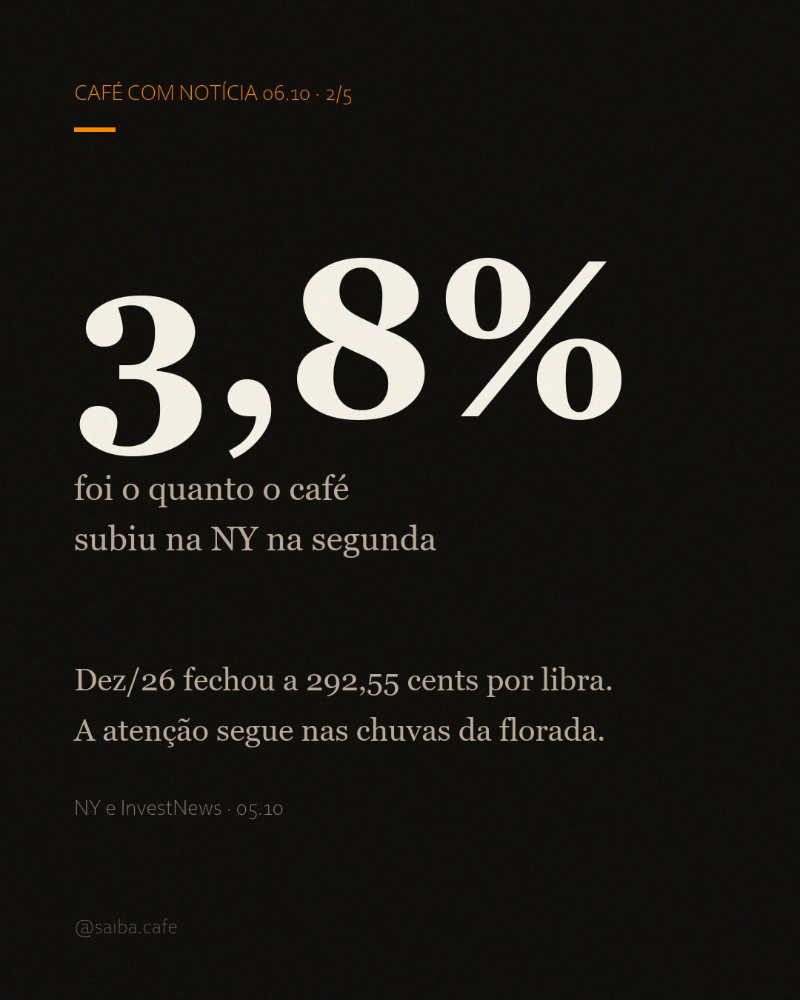
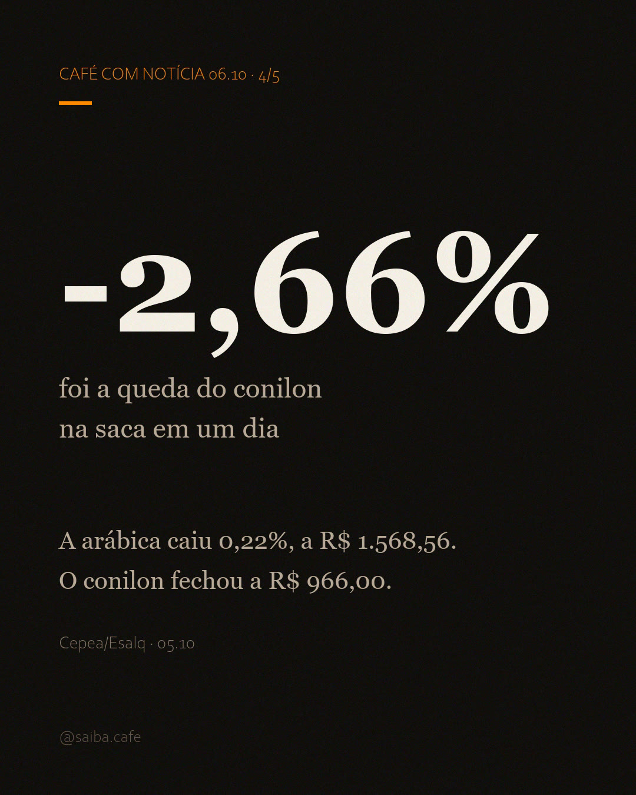

O mundo pagou mais, o Brasil recebeu menos
Na segunda-feira (05.10), o mercado internacional acordou comprador. O contrato dez/26 do arábica fechou a 292,55 cents por libra na NY, segundo a Notícias Agrícolas, e chegou a subir 3,8% no caminho (InvestNews, com dados da Bloomberg). A curva toda apontou para cima: o contrato março/27 fechou a 284,30 cents por libra e o maio/27, a 280,90, na mesma nota. Em Londres, a robusta novembro/26 fechou a US$ 3.528 por tonelada, alta de 1,70%. Quem olha só o preço em dólar viu um café valendo mais que na sexta-feira.
No Brasil, a mesma segunda andou para o outro lado. O dólar fechou a R$ 5,00, e o real chegou a valorizar 5% no dia. O indicador do arábica do Cepea/Esalq recuou 0,22%, a R$ 1.568,56, e o do conilon caiu 2,66% num único pregão, a R$ 966,00 (fonte: Cepea/Esalq, 05.10). A saca brasileira ficou mais barata num dia em que o mundo pagou mais por ela.
292,55
cents por libra no fechamento do contrato dez/26 na NY (05.10)
R$ 5,00
fechamento do dólar, com o real valorizando até 5% no dia
−2,66%
queda do conilon no indicador do Cepea num único pregão

A tesoura do câmbio
A Safras & Mercado explicou, na reportagem da Notícias Agrícolas: a forte queda do dólar reduz a conversão das cotações internacionais para reais e tende a pressionar os preços domésticos, o que pode deixar os produtores mais retraídos nas negociações. O mecanismo cabe numa frase: o café brasileiro compete num mercado cotado em dólar, e o indicador brasileiro converte esse dólar para reais pelo câmbio do dia. Quando o real ganha força, a mesma cotação internacional vira menos reais na conta de quem vende.
Na ponta do lápis, as duas forças se movem em sentidos opostos. A alta de até 3,8% na NY empurra o preço em dólar para cima; a valorização de até 5% do real empurra o valor em reais para baixo. Na segunda, a segunda força foi mais forte, e a saca em reais fechou o dia mais barata. A própria Notícias Agrícolas resumiu: o mesmo movimento cambial que ajudou a sustentar Nova York acabou limitando a transmissão da valorização internacional para o produtor brasileiro.
As duas moedas não contam a mesma história. Do lado internacional, a alta tem explicação: preocupação com o clima nas principais origens produtoras, chuvas em excesso no Vietnã, onde a colheita do robusta começa, e um baixo volume de estoques certificados de arábica na ICE. Segundo a análise do Barchart citada na nota, a valorização do real ainda desestimula a venda para exportação, o que reduz a pressão de oferta do maior produtor mundial lá fora e sustenta as cotações futuras. O mesmo dólar que sustenta a NY amarra a saca do produtor brasileiro.
Dois indicadores, duas quedas
O arábica recuou 0,22% na segunda, a R$ 1.568,56. A queda é pequena no dia, mas emenda uma sequência: o indicador fechou setembro a R$ 1.576,85, queda de 9,81% no mês, e abriu outubro a R$ 1.572,01 em 02.10, com US$ 301,33 a saca (fonte: Cepea/Esalq; a matéria de 05.10 do blog detalha o fechamento de setembro). Três fechamentos em fila, R$ 1.576,85, R$ 1.572,01 e R$ 1.568,56, desenham a direção: queda lenta, semana após semana.
O conilon fez o movimento mais forte: 2,66% de queda num dia, a R$ 966,00. É o indicador do grão que acompanha a robusta internacional, que também fechou em alta em Londres, e mesmo assim caiu aqui, pela mesma lógica do câmbio. No levantamento da Conab divulgado em 24.09, o conilon também foi a única safra a encolher na estimativa de 2026, queda de 6,6% sobre a safra anterior (a mesma matéria de 05.10 cobre o levantamento completo).

Por que importa pra você
Se você bebe
O alívio na prateleira continua devagar, e a direção segue a do indicador: queda lenta. O dia de segunda reforçou o caminho, com o câmbio trabalhando a favor do bolso. O conilon, que abastece boa parte dos blends e do solúvel, caiu mais forte no dia. O arábica das cafeterias segue disputado lá fora, e é ele que demora mais a ceder. E vale lembrar que a prateleira tem outras camadas: torrefação, embalagem, frete e margem do varejo. O dia de segunda mexeu na primeira camada, a do grão; o resto segue a própria agenda.
Se você produz
Para quem ainda tem café no pátio, a conta da semana tem duas linhas: o preço em dólar e o câmbio. Quando o real valoriza, a conversão rende menos reais, e a decisão de vender passa pela moeda antes de passar pelo contrato. A nota da Safras & Mercado aponta produtores mais retraídos nas negociações, o efeito clássico de quem prefere esperar um câmbio melhor antes de fechar o saco.
Se você investe
A agenda do mercado segue nas chuvas da florada 2026/27 no Brasil e no excesso de chuva no Vietnã, com estoques certificados baixos como pano de fundo. O fator novo da segunda foi a moeda: enquanto o real continuar ganhando força, o preço em reais sente a pressão antes de qualquer notícia de safra. Safra e estoque já eram conhecidos; o câmbio é a variável que mudou de humor. E o pano de fundo lá fora ganhou número: analistas da Hedgepoint estimam um superávit global de 8,9 milhões de sacas no ano-safra atual (InvestNews/Bloomberg), o grão que sobra no papel e explica por que a alta internacional tem teto.
A tese da casa
Opinião da casa: nesta safra, a moeda fala mais alto que o clima. A segunda deu a prova, com o mundo pagando mais e a saca brasileira caindo no mesmo dia, porque o real valorizou. Sem entrar na política, o mecanismo vale para o resto do ano: o clima ainda decide o volume colhido, mas a moeda decide quanto esse volume vale em reais. Enquanto o câmbio recolher, o preço interno não acompanha o internacional de perto.
chuta aí: quanto custa o café na sua cidade? se a prateleira ficou mais barata essa semana, conta aí.
Fontes
- Notícias Agrícolas: "Café fecha em alta em NY e Londres, mas queda do dólar limita preços no mercado brasileiro", 05.10.2026: fechamento do dez/26 a 292,55 cents/lb, mar/27 a 284,30, mai/27 a 280,90, dólar a R$ 5,00, robusta nov/26 a US$ 3.528/t (+1,70%), chuvas da florada 2026/27 no Brasil, estoques certificados baixos na ICE, análise do Barchart sobre a valorização do real e das exportações, e análise da Safras & Mercado sobre a conversão cambial dos preços domésticos. noticiasagricolas.com.br
- InvestNews/Bloomberg, 05.10.2026: valorização de até 5% do real no dia, alta de até 3,8% nos contratos de café na NY e superávit global estimado em 8,9 milhões de sacas no ano-safra atual pela Hedgepoint. investnews.com.br
- Cepea/Esalq: Indicador do Café Arábica (R$ 1.568,56 em 05.10, −0,22% no dia; R$ 1.572,01 em 02.10, −0,34% no dia, US$ 301,33; R$ 1.576,85 fechando setembro, −9,81% no mês) e Indicador do Café Robusta (R$ 966,00 em 05.10, −2,66% no dia), 05.10.2026. Dados em licença CC BY-NC 4.0. cepea.org.br/cafe